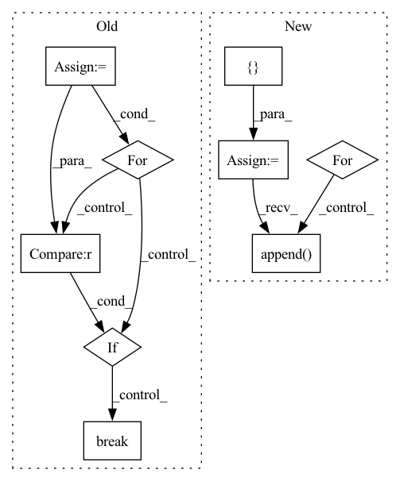

Pattern ID :23945
Before Change
Returns:
collected (list[data]): a list of data gathered from each rank
world_size = get_world_size()
total_size = len(bytearray(nncore.dumps(data))) * world_size
pynvml.nvmlInit()
matched = False
for i in range(world_size):
handle = pynvml.nvmlDeviceGetHandleByIndex(i)
meminfo = pynvml.nvmlDeviceGetMemoryInfo(handle)
if meminfo.free < total_size :
matched = True
break
if matched:
return _all_gather_cpu(data)
else:After Change
tensor_list = [tensor.new_empty([max_size]) for _ in size_list]
dist.all_gather(tensor_list, tensor, group=group)
gathered = []
for size, tensor in zip(size_list, tensor_list):
buffer = tensor.cpu().numpy().tobytes()[:size]
gathered.append( nncore.loads(buffer))
return gathered
In pattern: SUPERPATTERN
Frequency: 3
Non-data size: 9
Instances Fragment ID: 74503538
Project Name: yeliudev/nncore
Commit Name: c60692996f4316b5befe701efbc18a9ad7cc7ac1
Time: 2020-03-11
Author: goolhanrry@gmail.com
File Name: nncore/engine/comm.py
M Class Name: AnonimousClass
N Class Name: AnonimousClass
M Method Name: all_gather(2)
N Method Name: all_gather(1)
M Parent Class:
N Parent Class:
M File Name: nncore/engine/comm.py
N File Name: nncore/engine/comm.py
M Start Line: 47
M End Line: 78
N Start Line: 86
N End Line: 112
Before Change
self.duration = duration
if overlap is None:
overlap = self.duration / 2
self.json_data = []
for songID, track in enumerate(self.mus.tracks):
for start in np.arange(0, track.duration, duration - overlap):
if start + duration >= track.duration :
break
track.chunk_start = start
track.chunk_duration = duration
target = track.targets[self.target].audio.transpose(1, 0)After Change
if set(self.sources) == set(__sources__):
mixture = track.audio.transpose(1, 0)
else:
sources = []
for _source in self.sources:
sources.append( track.targets[_source].audio.transpose(1, 0)[np.newaxis])
sources = np.concatenate(sources, axis=0)
mixture = sources.sum(axis=0)
self.std[songID] = np.std(mixture.mean(axis=0)) Fragment ID: 74503527
Project Name: tky823/dnn-based_source_separation
Commit Name: b7a22e8f24f8206fc28ef8b7f01f01fcce0a498c
Time: 2021-08-10
Author: 40362510+tky823@users.noreply.github.com
File Name: egs/musdb18/conv-tasnet/src/adhoc_dataset.py
M Class Name: WaveTrainDataset
N Class Name: WaveTrainDataset
M Method Name: __init__(8)
N Method Name: __init__(8)
M Parent Class: WaveDataset
N Parent Class: WaveDataset
M File Name: egs/musdb18/conv-tasnet/src/adhoc_dataset.py
N File Name: egs/musdb18/conv-tasnet/src/adhoc_dataset.py
M Start Line: 91
M End Line: 117
N Start Line: 83
N End Line: 98
Before Change
// 设置attention mask
src_mask = (src != 0).unsqueeze(-2)
// 用训练好的模型进行decode预测
out = greedy_decode(model, src, src_mask, max_len=MAX_LENGTH, start_symbol=data.cn_word_dict["BOS"])
// 初始化一个用于存放模型翻译结果句子单词的列表
translation = []
// 遍历翻译输出字符的下标（注意：开始符"BOS"的索引0不遍历）
for j in range(1, out.size(1)):
// 获取当前下标的输出字符
sym = data.cn_index_dict[out[0, j].item()]
// 如果输出字符不为"EOS"终止符，则添加到当前句子的翻译结果列表
if sym != "EOS" :
translation.append(sym)
// 否则终止遍历
else:
break
// 打印模型翻译输出的中文句子结果
print("translation: %s" % " ".join(translation))
After Change
在data上用训练好的模型进行预测，打印模型翻译结果
sp_chn = chinese_tokenizer_load()
trg = []
res = []
with torch.no_grad():
// 在data的英文数据长度上遍历下标
for batch in tqdm(data):
// 待翻译的英文句子
en_sent = batch.src_text
// 对应的中文句子
cn_sent = batch.trg_text
// 打印模型翻译输出的中文句子结果
for i in range(len(en_sent)):
src = batch.src[i]
// 增加一维
src = src.unsqueeze(0)
// 设置attention mask
src_mask = (src != 0).unsqueeze(-2)
// 用训练好的模型进行decode预测
decode_result = greedy_decode(model, src, src_mask,
max_len=config.max_len).squeeze().tolist()
// 模型翻译结果解码
translation = sp_chn.decode_ids(decode_result)
trg.append(cn_sent[i])
res.append( translation)
if i == 3:
break
res = [res]
Fragment ID: 74503545
Project Name: hemingkx/chinesenmt
Commit Name: 9adf53cb6d9b875c9d173643a8d266d49d6f90eb
Time: 2020-12-15
Author: hemingkx@gmail.com
File Name: train.py
M Class Name: AnonimousClass
N Class Name: AnonimousClass
M Method Name: evaluate(2)
N Method Name: evaluate(2)
M Parent Class:
N Parent Class:
M File Name: train.py
N File Name: train.py
M Start Line: 53
M End Line: 84
N Start Line: 67
N End Line: 95